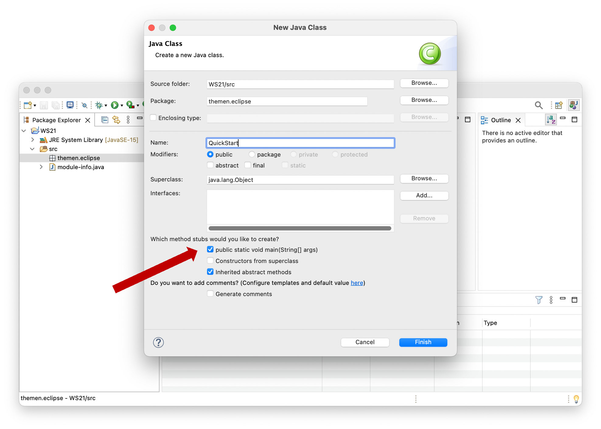

Integrated Developmemt Environment (IDE)¶
Es gibt eine Vielzahl von Integrierten Entwicklungsumgebungen (Integrated Developmemt Environment (IDE)) für Java und viele davon sind auch wirklich gut und für die professionelle Entwicklung von Java-Anwendungen geeignet. Hervorzuheben sind z.B. eclipse, IntelliJ IDEA und Visual Studio Code (VSCode).
Sie sollten sich für eine der drei entscheiden. Es bleibt Ihnen überlassen, welche IDE Sie wählen. Alle drei IDEs sind hervorragend geeignet. Höchstwahrscheinlich werden Sie spätestens für WebTech zu IntelliJ IDEA oder VSCode wechseln, obwohl man auch dort Eclipse sehr gut verwenden kann. Der große Pluspunkt von Eclipse ist, dass es sich um eine Open-Source-Community-Anwendung handelt, die alle Bedürfnisse erfüllt. Grundsätzlich ist es sehr gut, verschiedene IDEs auszuprobieren, bis Sie die IDE für sich entdecken, die Sie in Zukunft verwenden wollen. Probieren Sie es einfach aus.
Ich werde Eclipse zum Zeigen der Implementierungen und in den Screenshots im Skript verwenden.
Eclipse
ist Open Source, wird von einer engagierten Community entwickelt und sehr weit auch im professionellen Umfeld verbreitet. Eclipse gibt es bereits seit 20 Jahren und kann hier heruntergeladen werden. Wenn Sie Eclipse für Ihre Java-Entwicklungen installieren wollen, dann wählen Sie bei der Installation die Eclipse IDE for Java Developers aus. Dabei wird auch das Java Development Kit (JDK) installiert und nach dem Start von Eclipse können Sie sofort losprogrammieren. Die aktuelle Version ist 2021-12. Wählen Sie beim ersten Start von Eclipse Ihren workspace aus. Der workspace ist der Ordner, in dem Sie Ihre Programme speichern.
IntelliJ IDEA
IntelliJ IDEA wird nun auch bereits seit über 20 Jahren von der Firma JetBrains entwickelt, ist in Java geschrieben und war ursprünglich für die reine Java-Entwicklung geplant, kann aber nun für die Programmierung mit vielen verschiedenen Programmiersprachen verwendet werden. Die Produktauswahl ist mittlerweile sehr vielfältig. Die Ultimate Version ist kostenpflichtig, kann jedoch von Studentinnen kostenlos verwendet werden. Dazu ist allerdings die Registrierung mit der ...htw-berlin.de-Adresse notwendig. Interessant, wenn auch leider teilweise kostenpflichtig, sind in diesem Zusammenhang auch die Angebote JetBrains Academy und IntelliJ IDEA Edu.
VSCode
setzt sich zunehmend immer mehr bei WebTech-Programmiererinnen durch, ist aber auch sehr geeignet für die Implementierung mit Java. Ein guter Startpunkt für die Java-Entwicklung mit VSCode findet sich hier. Folgen Sie dort den Links Install the Coding Pack for Java - ... und Install the Extension for Java. Das wirklich Tolle an VSCode ist, dass es sich um eine Webanwendung handelt (eine sogenannte progressive web app). Sie läuft also eigentlich im Browser, was man aber gar nicht merkt. Die Unterstützung für die Java-Implementierung ist, wie auch bei Eclipse und IntelliJ, ausgezeichnet.
Starten mit Eclipse¶
Bei ersten Start von Eclipse werden Sie gefragt, wo Sie den workspace festlegen wollen. Der workspace ist der Ordner, in dem Sie Ihre Programme speichern. Wählen Sie einen Ordner, in dem Sie alle Schreibrechte haben, z.B. Documents/HTW/Prog1/workspace.
Sobald Eclipse geöffnet ist, können Sie ein Java Projekt erstellen. Wählen Sie dazu File --> New --> Java Project. Im ersten Semester kommen Sie mit einem projekt aus, d.h. Sie können Ihr Java-Projekt z.B. WS21 nennen.
Markieren auf der linken Seite (im Package Explorer) das Projekt WS21 und wählen dann File --> New --> Package. Mit Paketen strukturieren wir Java-Projekte. Pakete können wir uns wie Ordner vorstellen (sind sie auch). Paketnamen werden kleingschrieben und mit einem Punkt getrennt. Wir geben für unser neues Package z.B. den Namen themen.eclipse an. Es entsteht ein ordner themen und darin ein Unterordner eclipse. Wenn Sie zukünftig weitere Themen bearbeiten, können Sie das dann im Package themen.unterthema machen (wobei unterthema für einen Themennamen steht).
Wir markieren das Package themen.eclipse und wählen File --> New --> Class. Es öffnet sich ein Eingabefenster:

In dieses Fenster tragen wir den Namen unserer Klasse ein, z.B. QuickStart. Außerdem klicken wir das Häkchen dem dem Label public static void main(String[] args) an und klicken dann auf den Button Finish.
Es erscheint unsere Klasse im Editor-Fenster:

Die Klasse Quickstart wird in der folgenden Form erzeugt:
1 2 3 4 5 6 7 8 9 10 | |
In Zeile 1 steht die package-Deklaration. Darin wird angegeben, dass sich unsere Klasse im Paket themen.eclipse befindet. Die zeilen 3-10 enthalten die Klasse QuickStart. Diese Klasse enthält eine einzige Methode, die main()-Methode.
Die main()-Methode¶
In BlueJ hatten wir immer eine Methode ausgewählt, die wir ausgeführt haben. Von nun an ist es so, dass immer die main()-Methode ausgeführt wird (automatisch durch Programmstart). Wenn wir also unser Programm übersetzen und starten, wird genau die main()-Methode ausgeführt - ohne dass wir ein Objekt der Klasse QuickStart erzeugen müssen. Es wird nun immer eine Programmklasse geben, die die main()-Methode enthält. Ohne die main()-Methode kann auch nichts ausgeführt werden.
Dass wir von der Klasse kein Objekt erzeugen müssen, um die main()-Methode zu starten, erkennen wir am Schlüsselwort static im Methodenkopf. Eine Methode, die als static deklariert wird, kann ausgeführt werden, ohne ein Objekt der Klasse zu erzeugen.
Übersetzen und Ausführen des Programms¶
Geben Sie in die main()-Methode syso ein, drücken Sie Strg + Leer-Taste (Control + Leer) und dann Enter. Es erscheint System.out.println(). Erweitern Sie die Methode um die Ausgabe der Zeichenkette "Hello FIW!:
1 2 3 4 5 6 7 8 9 10 | |
Wählen Sie dann Run --> Run oder klicken Sie auf den grünen runden Button mit dem weißen Pfeil in der Werkzeugleiste . Das Programm wird compiliert und ausgeführt. Es öffnet sich unten das Konsolen-Fenster und dort erscheint Hello FIW!:

Fertig. Sie haben Eclipse eingerichtet.
Ordnerstruktur¶
gehen Sie im Finder oder im Datei Explorer in den wiorkspace-Ordner. Darin sehen Sie den Ordner WS21 (das Java-Projekt). In dem WS21 gibt es einen bin- und einen src-Ordner.
Im src-Ordner finden Sie den Ordner themen (ein package) und darin den Ordner eclipse (ebenfalls ein package). Darin liegt die QuickStart.java.
Der bin-Ordner ist genauso aufgebaut, wie der src-Ordner, nur dass darin die *.class-Dateien gespeichert sind und nicht die *.java-Dateien.
Die Ordnerstruktur zeigt nochmal, dass Pakete der Strukturierung unserer Dateien dienen.